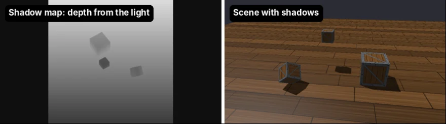

Illuminazione avanzata
Shadow mapping#
examples/Sources/14-ShadowMapping, si esegue con swift run ShadowMapping. Scarica tutti gli esempi oppure guarda come eseguirli.Le ombre ancorano gli oggetti al suolo e rivelano come le cose sono disposte nello spazio.
La tecnica standard in tempo reale è lo shadow mapping, ed è fatta di pezzi che conosci già: un depth buffer e il rendering su texture.
L'idea#
Un punto è in ombra se tra lui e la luce c'è qualcosa.
Metti una camera nella luce e disegna la profondità della scena in una texture.
Quella texture, la shadow map, registra per ogni direzione fin dove la luce arriva prima di colpire qualcosa.
Quando calcoli un fragment nel pass principale, trasformalo nella vista della luce e confronta la sua profondità con la shadow map.
Se il fragment è più lontano dalla luce del valore salvato, qualcosa di più vicino sta bloccando la luce.
La texture della shadow map#
let shadowSize = 2048
let descriptor = MTLTextureDescriptor.texture2DDescriptor(
pixelFormat: .depth32Float, width: shadowSize, height: shadowSize, mipmapped: false)
descriptor.usage = [.renderTarget, .shaderRead]
descriptor.storageMode = .private
shadowMap = device.makeTexture(descriptor: descriptor)!
shadowPass = MTLRenderPassDescriptor()
shadowPass.depthAttachment.texture = shadowMap
shadowPass.depthAttachment.loadAction = .clear
shadowPass.depthAttachment.clearDepth = 1.0
shadowPass.depthAttachment.storeAction = .store
const NS::UInteger shadowSize = 2048;
MTL::TextureDescriptor* descriptor = MTL::TextureDescriptor::texture2DDescriptor(
MTL::PixelFormatDepth32Float, shadowSize, shadowSize, false);
descriptor->setUsage(MTL::TextureUsageRenderTarget | MTL::TextureUsageShaderRead);
descriptor->setStorageMode(MTL::StorageModePrivate);
shadowMap = device->newTexture(descriptor);
shadowPass = MTL::RenderPassDescriptor::alloc()->init();
shadowPass->depthAttachment()->setTexture(shadowMap);
shadowPass->depthAttachment()->setLoadAction(MTL::LoadActionClear);
shadowPass->depthAttachment()->setClearDepth(1.0);
shadowPass->depthAttachment()->setStoreAction(MTL::StoreActionStore);
Il pass non ha alcun attachment di colore.
Questa volta la profondità va salvata, visto che leggerla è l'intero scopo.
Le matrici della luce#
Una luce direzionale ha raggi paralleli, quindi la sua proiezione è ortografica: una scatola senza prospettiva.
Aggiungi a Math.swift:
extension float4x4 {
/// Right-handed orthographic projection with a 0...1 depth range.
init(orthographicLeft l: Float, right r: Float, bottom b: Float, top t: Float,
near n: Float, far f: Float) {
self.init(columns: (
SIMD4<Float>(2 / (r - l), 0, 0, 0),
SIMD4<Float>(0, 2 / (t - b), 0, 0),
SIMD4<Float>(0, 0, 1 / (n - f), 0),
SIMD4<Float>((l + r) / (l - r), (t + b) / (b - t), n / (n - f), 1)))
}
}
/// Right-handed orthographic projection with a 0...1 depth range.
inline simd::float4x4 orthographic(float l, float r, float b, float t, float n, float f) {
return simd_matrix(simd_make_float4(2 / (r - l), 0, 0, 0),
simd_make_float4(0, 2 / (t - b), 0, 0),
simd_make_float4(0, 0, 1 / (n - f), 0),
simd_make_float4((l + r) / (l - r), (t + b) / (b - t), n / (n - f), 1));
}
let lightPosition = Float3(-2, 4, -1)
let lightView = float4x4(lookAt: lightPosition, center: [0, 0, 0], up: [0, 1, 0])
let lightProjection = float4x4(orthographicLeft: -10, right: 10, bottom: -10, top: 10,
near: 1, far: 12)
let lightViewProjection = lightProjection * lightView
simd::float3 lightPosition = {-2, 4, -1};
simd::float4x4 lightView = lookAt(lightPosition, simd::float3{0, 0, 0}, simd::float3{0, 1, 0});
simd::float4x4 lightProjection = orthographic(-10, 10, -10, 10, 1, 12);
simd::float4x4 lightViewProjection = lightProjection * lightView;
La scatola deve contenere tutto ciò che proietta o riceve ombre nella zona che ti interessa.
Tienila più stretta che puoi: la risoluzione della shadow map si distribuisce su tutta la scatola.
Il pass di profondità#
La pipeline di questo pass ha una vertex function, nessuna fragment function e nessun formato di colore:
vertex float4 vertex_shadow(VertexIn in [[stage_in]],
constant ShadowUniforms &uniforms [[buffer(1)]]) {
return uniforms.lightViewProjection * uniforms.model * float4(in.position, 1.0);
}
let descriptor = MTLRenderPipelineDescriptor()
descriptor.vertexFunction = library.makeFunction(name: "vertex_shadow")
descriptor.fragmentFunction = nil
descriptor.vertexDescriptor = vertexDescriptor
descriptor.depthAttachmentPixelFormat = .depth32Float
shadowPipelineState = try device.makeRenderPipelineState(descriptor: descriptor)
MTL::RenderPipelineDescriptor* descriptor = MTL::RenderPipelineDescriptor::alloc()->init();
descriptor->setVertexFunction(library->newFunction(MTLSTR("vertex_shadow")));
descriptor->setFragmentFunction(nullptr);
descriptor->setVertexDescriptor(vertexDescriptor);
descriptor->setDepthAttachmentPixelFormat(MTL::PixelFormatDepth32Float);
shadowPipelineState = device->newRenderPipelineState(descriptor, &error);
Una vertex function può restituire un semplice float4; viene preso come posizione.
A ogni frame disegna la scena con questa pipeline dentro shadowPass prima del pass principale, usando lo stesso command buffer.
Usare la shadow map#
Nel pass principale la vertex function produce anche la posizione nel clip space della luce:
out.shadowPosition = uniforms.lightViewProjection * world;
La fragment function la converte in una coordinata di texture e in una profondità da confrontare:
static float calcShadow(float4 shadowPosition, depth2d<float> shadowMap, sampler shadowSampler) {
float3 proj = shadowPosition.xyz / shadowPosition.w;
float2 uv = proj.xy * float2(0.5, -0.5) + 0.5;
if (proj.z > 1.0) {
return 1.0; // beyond the light's far plane: lit
}
return shadowMap.sample_compare(shadowSampler, uv, proj.z);
}
- Dividere per w non serve con una proiezione ortografica, ma fa funzionare la funzione anche con le luci prospettiche.
- In NDC x e y vanno da -1 a 1 con y verso l'alto, e le coordinate di texture vanno da 0 a 1 con y verso il basso.
Da qui la scala(0.5, -0.5).
La profondità è già nell'intervallo da 0 a 1 e non va convertita. - Le texture di profondità hanno un loro tipo negli shader,
depth2d<float>.
sample_compare confronta la profondità di riferimento con la texture e restituisce 1 se il test passa e 0 altrimenti.
Il test si configura sul sampler:
let shadowSamplerDescriptor = MTLSamplerDescriptor()
shadowSamplerDescriptor.minFilter = .linear
shadowSamplerDescriptor.magFilter = .linear
shadowSamplerDescriptor.compareFunction = .lessEqual
shadowSamplerDescriptor.sAddressMode = .clampToEdge
shadowSamplerDescriptor.tAddressMode = .clampToEdge
shadowSampler = device.makeSamplerState(descriptor: shadowSamplerDescriptor)!
MTL::SamplerDescriptor* shadowSamplerDescriptor = MTL::SamplerDescriptor::alloc()->init();
shadowSamplerDescriptor->setMinFilter(MTL::SamplerMinMagFilterLinear);
shadowSamplerDescriptor->setMagFilter(MTL::SamplerMinMagFilterLinear);
shadowSamplerDescriptor->setCompareFunction(MTL::CompareFunctionLessEqual);
shadowSamplerDescriptor->setSAddressMode(MTL::SamplerAddressModeClampToEdge);
shadowSamplerDescriptor->setTAddressMode(MTL::SamplerAddressModeClampToEdge);
shadowSampler = device->newSamplerState(shadowSamplerDescriptor);
Con .lessEqual il risultato è 1 dove il fragment sta alla profondità salvata o davanti a essa, cioè dove è illuminato.
Applicalo ai termini diffuse e specular e lascia stare l'ambient:
float lit = calcShadow(in.shadowPosition, shadowMap, shadowSampler);
float3 color = ambient + lit * (diffuse + specular);
Shadow acne#
Il primo risultato è coperto di strisce scure.
La shadow map ha una risoluzione limitata, quindi molti fragment condividono un texel, e su una superficie inclinata metà di loro risulta appena dietro la profondità salvata.
È la shadow acne.
La cura è un depth bias: spingere la profondità salvata un po' più lontano dalla luce.
Metal lo applica durante la rasterizzazione del pass delle ombre:
shadowEncoder.setDepthBias(0.015, slopeScale: 7, clamp: 0.02)
shadowEncoder->setDepthBias(0.015f, 7.0f, 0.02f); // bias, slope scale, clamp
La parte costante si misura in unità che dipendono dal formato della profondità, quindi considera questi numeri un punto di partenza.
La parte proporzionale alla pendenza aumenta da sola il bias sulle superfici molto inclinate rispetto alla luce, che sono quelle che ne hanno più bisogno.
Troppo bias stacca l'ombra da chi la proietta, un artefatto noto come peter panning.
Regola finché spariscono entrambi.
Per le mesh chiuse aiuta anche disegnare nella shadow map solo le facce posteriori (setCullMode(.front)).
Bordi più morbidi#
Poiché il sampler di confronto usa il filtro lineare, la GPU confronta i quattro texel più vicini e mescola i risultati.
È il percentage-closer filtering (PCF) fatto dall'hardware, e ammorbidisce i bordi gratis.
Fare la media di qualche lettura in più li ammorbidisce ancora:
float2 texel = 1.0 / float2(shadowMap.get_width(), shadowMap.get_height());
float lit = 0.0;
for (int x = -1; x <= 1; x++) {
for (int y = -1; y <= 1; y++) {
lit += shadowMap.sample_compare(shadowSampler, uv + float2(x, y) * texel, proj.z);
}
}
lit /= 9.0;

Fuori dalla mappa#
I fragment fuori dalla scatola della luce leggono oltre la texture.
Con .clampToEdge ripetono il texel del bordo, e questo può spalmare ombre su tutta la scena.
Restituisci "illuminato" quando uv è fuori dall'intervallo da 0 a 1, oppure usa .clampToBorderColor con un bordo bianco opaco dove è supportato.
Oltre una sola mappa#
Una mappa sola non può coprire con risoluzione sufficiente una grande scena all'aperto.
Le cascaded shadow map dividono il frustum della vista in più intervalli, ognuno con la sua mappa, salvate negli strati di una texture depth2d_array.
Per gli spot usa una proiezione prospettica per la luce e lo stesso codice.
Esercizi#
- Mostra la shadow map su un triangolo a tutto schermo per controllare che cosa vede la luce.
Mostra la soluzione
Collega la shadow map a un pass di post-processing e manda in uscita il suo valore.
Dichiarala come una normale texture di profondità e leggila con un sampler ordinario, non con uno di confronto.float depth = shadowMap.sample(plainSampler, in.uv); return float4(float3(depth), 1.0);Dovresti vedere la scena dalla posizione della luce in toni di grigio.
Se è tutta bianca o tutta nera, il near plane e il far plane della luce non racchiudono la scena. - Imposta il bias a zero, poi a un valore grande, e riconosci l'acne e il peter panning.
Mostra la soluzione
A zero le superfici illuminate si coprono di strisce o puntini scuri: è l'acne, dovuta ai fragment che cadono appena dietro la profondità salvata nel loro texel.
Con un bias grande le strisce spariscono, ma le ombre si staccano dalla base degli oggetti e gli oggetti sottili smettono di proiettare ombra: è il peter panning.
La demo interattiva ha uno slider per il bias. - Muovi la luce nel tempo e guarda le ombre seguirla.
Mostra la soluzione
Calcola la posizione della luce dal tempo e ricostruisci la sua matrice view a ogni frame; il pass delle ombre e il pass principale devono usare la stessa matrice.
Tieni la scatola ortografica centrata sulla scena, non sulla luce.